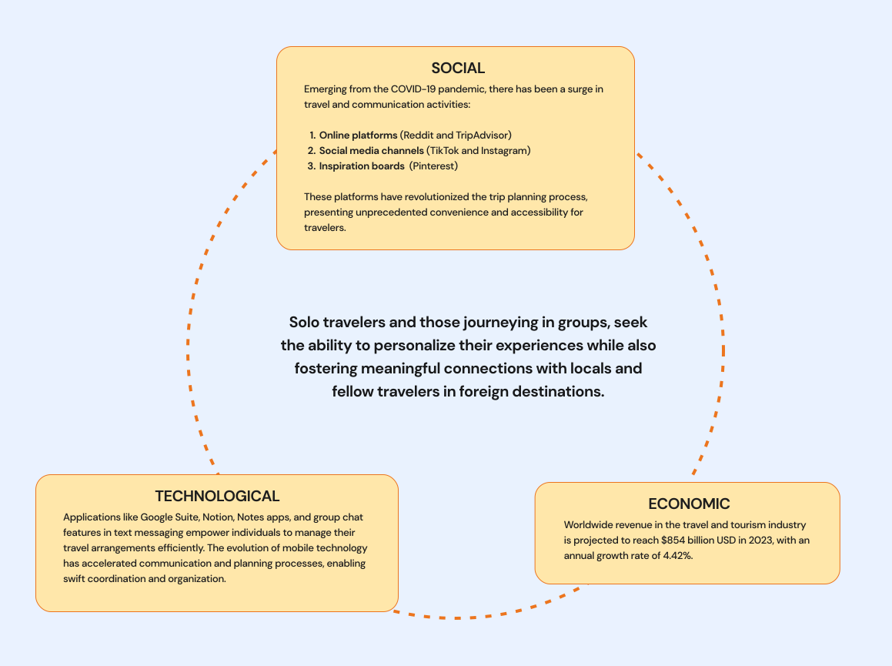
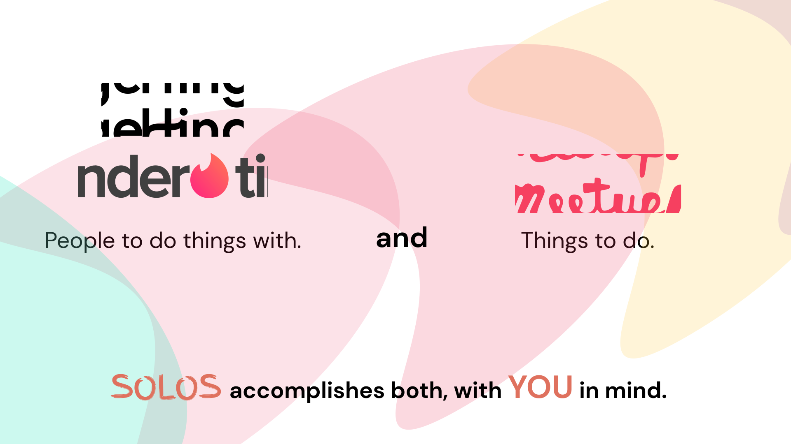
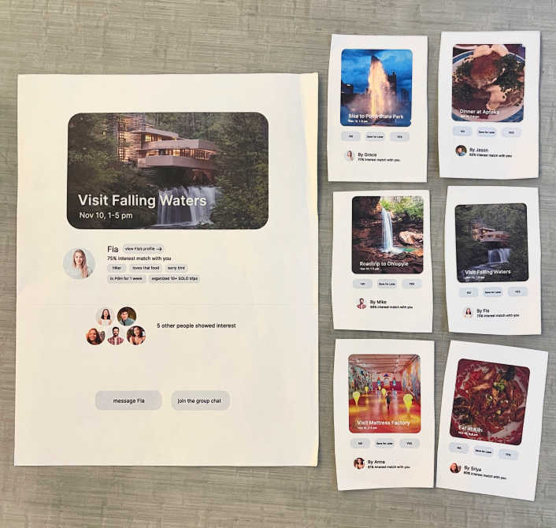
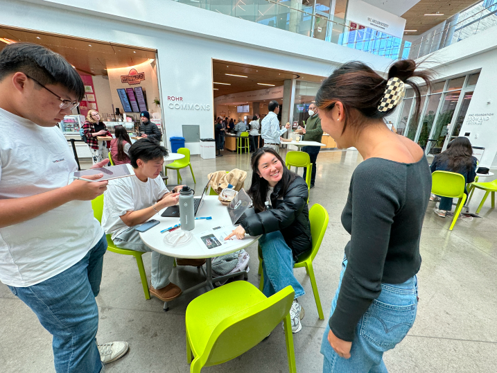
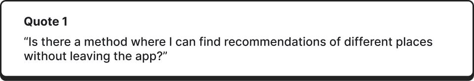
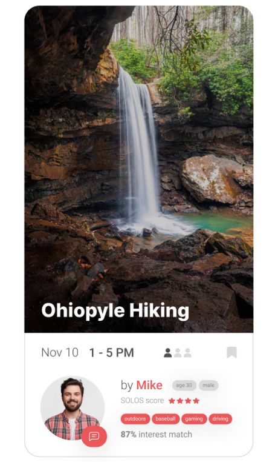
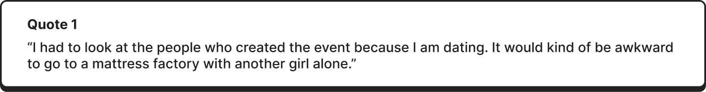
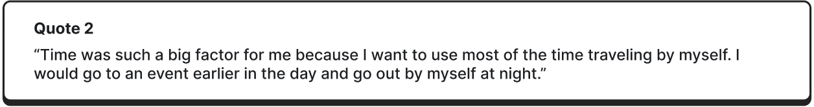
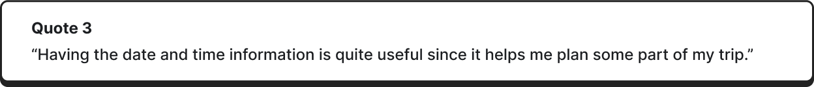
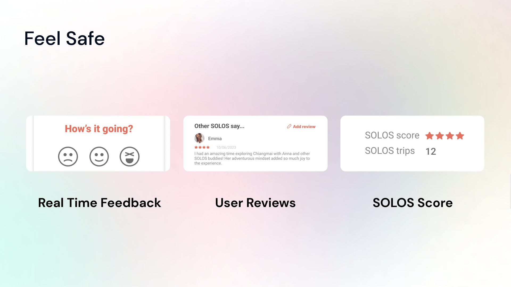

Solo traveling doesn't mean being alone. SOLOS is a reimagined event-based platform to connect solo-travelers abroad, allowing them to build low-commitment, genuine connections.
SOLOS is an event-based meetup platform for solo-travelers. Travelers either post a request about their ideal destination and wait for someone to join them, or join someone else's plan. SOLOS aims to build low-commitment yet genuine connections.
I was an integral part of every step of our process; I ran interviews to uncover key insights, analyzed data from hundreds of responses, facilitated effective critique sessions, drove decision making, and flexibly adapted our designs at each challenge we faced.
Post-COVID, travel is becoming more rampant than ever. But so is the commonality of solo traveling, which can be lonely or isolating.
A platform to target solo travelers wanting to connect with other travelers during their trips abroad.
Our process
How we built it
We started this project knowing we wanted to make the travel experience for individuals abroad more social. I mapped out social, technological, and economic factors to find a product opportunity gap for SOLOS to come out of.

Competitive Analysis
Examining the current competitive landscape, we observed Hinge and Tinder emerging as prominent platforms facilitating connections among like-minded individuals. Meanwhile, platforms like Meetup primarily cater to local event participation, albeit often geared toward group outings. In contrast, SOLOS presents a distinctive proposition: a platform fostering genuine connections with minimal commitment, coupled with the opportunity for collaborative exploration in new destinations.
Since our platform was also founded on the notion of pairing people with similar interests together, one question that kept coming up was, "How is this different from a dating app?" We made the key decision early on to make this an event-based, rather than people-based platform, to prioritize the act of exploring a new city with someone, rather than emphasizing personality traits about who that person was.

Target Customer Segment
Every traveler is different, but we chose to prioritize solo travelers who had an interest with connecting with other people during their trips abroad with SOLOS.


We brought a basic physical MVP to conduct directed storytelling interviews with over 10 target users. The goal was to collect the maximum amount of validated learnings about customers with least amount of effort. We presented our mockup to potential users around campus to understand their solo travel habits and preferences, interactions with our mockups, and willingness to use our solution. This process uncovered four main pain points:
Difficulty finding trustworthy people
Insights and
Design Decisions
Insight 1: Solo Travelers Prefer Spontaneity
When interviewees were asked to select two different search options from the MVP, all of them looked up for an event. They mentioned that it makes more sense for them to explore different places from participating in events. Unless the application recommends a place, they would choose a place based off pictures.

Design Decision 1: Adding a recommendation page
Based on user feedback, we decided to integrate a recommendation feature into the platform, leveraging user preferences, past event ratings and reviews, as well as other relevant data sources such as location popularity and personalized recommendations algorithms. This ensures that users receive tailored suggestions that align with their interests and enhance their overall travel experience.
Insight 2: Solo Travelers Value Trust Immensely
Access to other travelers' information and credibility is a major factor while making decisions about whether to meet up or not. Users need to trust the platform, its features, and most importantly, the people they plan to travel with.
These were some thoughts we had on strengthening trust among app users:
- Option to link users social media accounts to verify authenticity
- Include gender filter option
- Prioritize non-negotiable user choices through a toggle button to address safety concerns
- Add ID verification option at the time of profile creation
- Show specific areas of shared interests

Insight 3: Filters are important to maintaining the quality of user feeds
When interviewees were transitioning from the “Explore Page” to the search bar, they looked for different things in events. One specifically looked at the time of event. Another interviewee looked at the gender of the person that created the event. Users need specific filters based on their preference.




A deeper understanding
The SOLOS Travel Experience
SOLOS is a travel app with an intentional design to build trust with users at each touchpoint of the user journey. Beyond building trust, the platform aims to:
Features like tags and interest match make sure that you always match with the people that you will vibe with.

Travel oriented user profiles help you in getting to know the travelers prior to the event, where as one-on-one messaging makes it super convenient to plan and co-ordinate schedules. These features make sure that each and every experience on the SOLOS app is authentic and genuine.

We want each and every user to feel safe while using SOLOS, whether it is when you're finding other travelers to match with or when you are on a trip together. Hence, user safety on SOLOS is not just an afterthought, but an integral part of each and every experience. User reviews and SOLOS score help you decide if the other user is right match for you.

A final look
With SOLOS, you can...
Get a range of experiences
Save money on your travels
As an avid traveler, it was extremely fulfilling to work on a project in which I could envision myself using in the future. Not only was I able to learn immensely about designing disruptive services, but I did so alongside a team of passionate designers, innovators, and travelers.
We went through a lot of iterations of wire framing, logo designing, color palette selection, app flow, etc. throughout our design process. However, through it all, we kept our ideas well documented. We really emphasized as a team that no idea was a bad idea. And just like traveling with SOLOS, no design process is ever done truly alone.